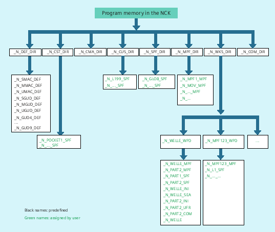

Files and programs (e.g. main programs and subprograms, macro definitions) are saved in the non-volatile program memory (→ passive file system).
A number of file types are also stored here temporarily; these can be transferred to the work memory as required (e.g. for initialization purposes when machining a specific workpiece).
The following standard directories are available:
Directory | Content |
|---|---|
_N_DEF_DIR | Data modules and macro modules |
_N_CST_DIR | Standard cycles |
_N_CMA_DIR | Manufacturer cycles |
_N_CUS_DIR | User cycles |
_N_WKS_DIR | Workpieces |
_N_SPF_DIR | Global subprograms |
_N_MPF_DIR | Main programs |
_N_COM_DIR | Comments |
The following file types can be stored in the main memory:
File type | Description |
|---|---|
<name>_MPF | Main program |
<name>_SPF | Subprogram |
<name>_TEA | Machine data |
<name>_SEA | Setting data |
<name>_TOA | Tool offsets |
<name>_UFR | Work offsets/frame |
<name>_INI | Initialization files |
<name>_GUD | Global user data |
<name>_RPA | R parameters |
<name>_COM | Comment |
<name>_DEF | Definitions for global user data and macros |
See also:
Program memory in the NCK: Additional information
External program memory
Addressing program memory files
Search path for subprogram call
Interrogating the path and file name